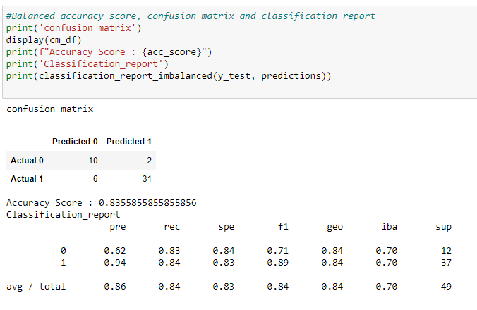
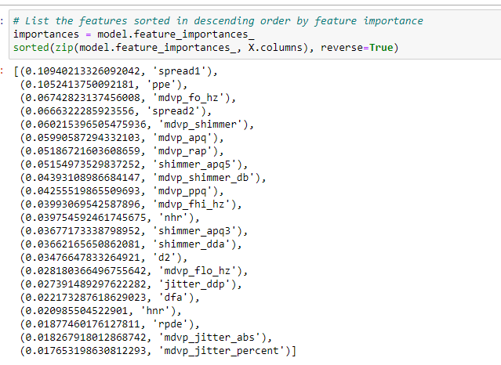

Machine Learning Project
What is Parkinson?
Parkinson's disease is a progressive nervous system disorder that affects movement. Symptoms start gradually, sometimes starting with a barely noticeable tremor in just one hand. Tremors are common, but the disorder also commonly causes stiffness or slowing of movement. In the early stages of Parkinson's disease, your face may show little or no expression. Your arms may not swing when you walk. Your speech may become soft or slurred. Parkinson's disease symptoms worsen as your condition progresses over time.
According to the Parkinson's Foundation, about 89 percent of people with Parkinson's disease experience speech and voice disorders. Based on our research, we were interested in utilizing a machine learning model to use voice measurements to detect Parkinson's disease and therefore predict if an individual is at risk of suffering the disease in a non-invasive way.
In this project we would like to answer the following questions:
Data
We retrieved the data set from the UCI machine learning repository.This dataset is composed of:
At the beginning of our project, we chose to predict Gross Domestic Product based on the amount of electricity used in the US. Based on the data set we were using and the steps we outlined, we decided that too many factors would make our project challenging to accomplish in the course timeframe. We came by the Parkinson's data set and decided it would be the right project to pursue based on its characteristics. We reviewed the data and concluded the following: The data did not require encoding, The data is 128 rows and may limit the training of our machine learning model. Since we had one data set, we moved it to PostgreSQL and split it into two data sets to start our data analysis.
Model: Balanced Random Forest Classifier
Random Forest
undersampling to maintain accuracy among large sets of data High efficiency for large datasets - A very common algorithm in machine learning. - Is a good way to balance any uneven data, leading to undersampling, the process of reducing the size of the larger data within the dataset to maintain the smaller data. - The accuracy when using this algorithm is useful as it can work through very large datasets - The ability to maintain accuracy within large datasets allows us to notice the outliers and also visualize data in clustering
We decided to use random forest because of its ability to maintain accuracy throughout the dataset. It is one of the algorithms that can handle many different inputs and the use of undersampling helps it maintain all the data. There is no limit to how many trees it can form, thus being efficient for datasets of any size, with multiple variables. It is also useful in regression analysis as well, not just classification. Because of its ability to analyze large sets of data, the accuracy is commonly a high level. For our topic, Parkinson's disease, it is very important we use a machine learning model that would take all features into account when predicting or analyzing the health status of patients. The model is one of the easiest and simplest to use when it comes to ensemble learning, with the ability to make as many trees to reach a prediction or classification.
When using the Random Forest Classification, it is still important to follow the steps of ensemble learning. To begin, the data should be trained and any necessary scaling should be done beforehand. After scaling and training the data, it should be resampled into the model. Then, after training the model to intake the data, the balanced accuracy score is able to be calculated. To measure the performance of the model, we are able to use the confusion matrix to assess all the values the algorithm can output, such as the high accuracy and precision the model is known for. We then proceeded to analyze the imbalanced classification report. To finish our analysis, we listed our features in the dataset in descending order to find the importance by percentage of each.
Results
Key Findings
We found that our model is .83 accurate. But we need to be cautious as the data offered some limitations while we also find the top 5 features of importance from the model are the following spread1, ppe, mdvp_fo_hz, spread2, mdvp_shimmer

